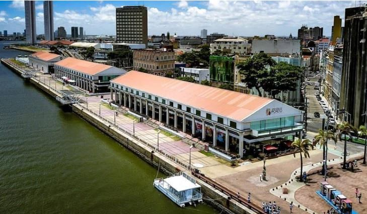
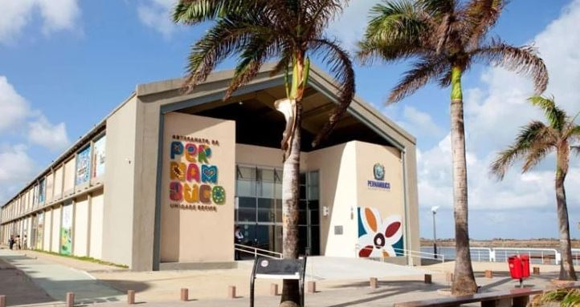

Aqui vão mais duas super dicas!
O Armazéns do Porto é o lugar ideal para aquela pausa para o almoço ou apenas para tomar um cafezinho ou uma cerveja para espantar o calor. O espaço fica bem ao lado do letreiro de Recife, na Praça do Marco Zero, e oferece uma variedade de bares, restaurantes, cafés e sorveterias. O mais legal de tudo é a vista privilegiada que se tem para o porto e para as esculturas de Brennand.
O Centro de Artesanato é parada obrigatória para os turistas que querem levar para casa uma lembrança da viagem. A grande loja conta com mais de 25 mil peças produzidas por artesãos de todo o estado. O espaço é extremamente bem organizado e tem ambientes decorados para que o visitante possa visualizar a utilização das peças nos diversos ambientes da casa.